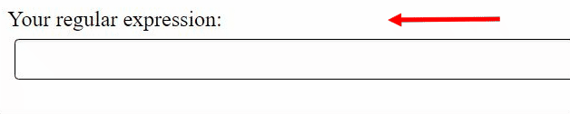
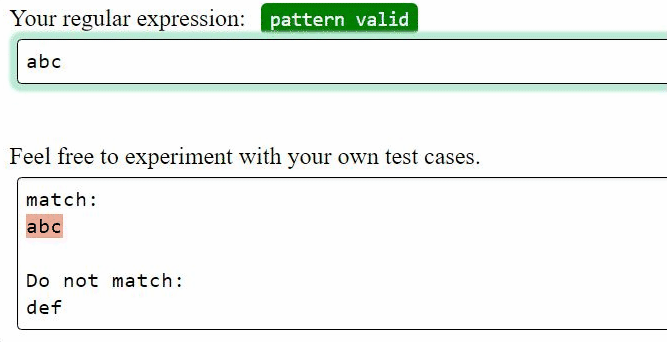
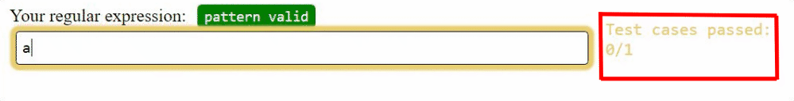

- 1. Regex input area
- The status tag shows if the regex is valid as you type. If your regex is not valid, it will show the error message.

- 2. Test string input area
-
The area below contains test strings that will highlight the return value for method re.findall as you type. It uses re.MULTILINE to match your regex with each line. If there are grouping in your regex, it will use different colors to highlight the groups captured in your regex.

You can also add your own test cases. Don't worry about losing the original test strings provided in this area - Click the reset button to reset the test cases back to the initial state.
- 3. Unit test cases
-
For each problem, there are several testcases that you will need to pass using your regex. Some testcases are hidden and are not provided in the test string area. While typing in the regex input, the tool will check the regex with the testcases automatically.

When you have passed all test cases for a problem, you will be prompted to move on to the next problem. There is a time limit(7 minutes) for each problem.
Let's try solving a sample problem first. In this sample problem, please write a regular expression to match "abc", and not match "def".
Note that because this is a tutorial problem, it will not take you to the next problem right after you pass all the testcases.
When you have done exploring the tool, click "Next tutorial page" at the end of this page to move on to the next page of tutorial.